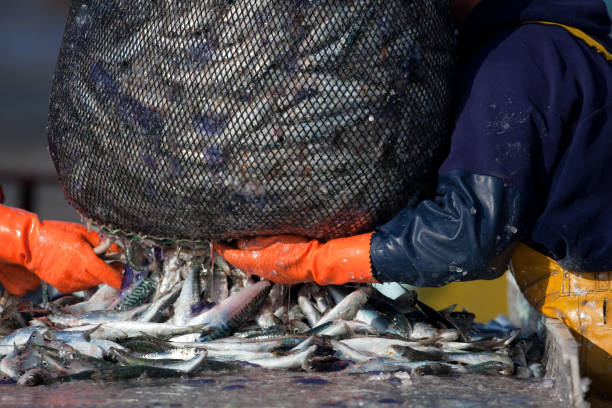
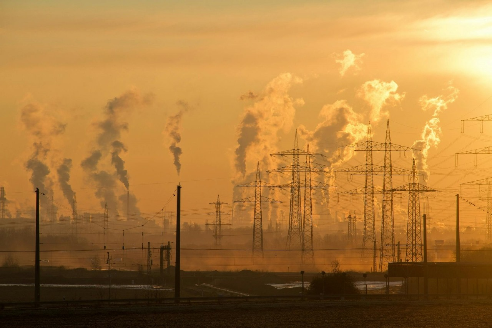
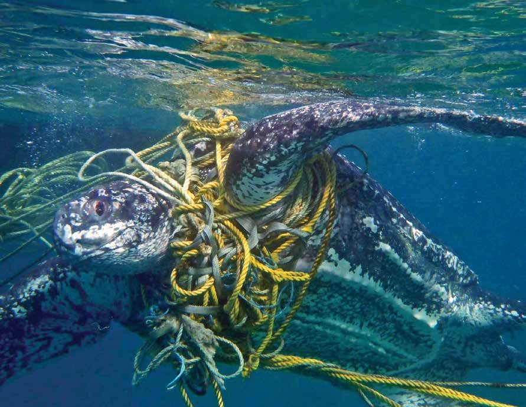

| Threats | ⚠ Cause | 🐠 Impact | 🛠 Solutions | 🖼 Image |
|---|---|---|---|---|
| Plastic Pollution | Violation of environmental norms, consumption of single-used plastics, and a lack of recycling. |
Endangerment of marine life through plastic ingestion and entanglement; secondly, the presence of microplastics in the food chain and water contamination. |
It's a good idea to reduce plastic use, provide more efficient systems of recycling and delete plastic entirely. Or implement bio-degradables. |
 |
| Overfishing | Fishing practices that harm the environment, ever-growing supply chains, and illegal fishing |
Reduced fish populations, marine ecosystem disruption, and coastal community displacement in terms of means of subsistence. |
Fishing quotas should be in place. Sustainable seafood choices should be put in place. Thus, more marine protected areas must be put in place. |
 |
| Climate Change | Fossil fuels, deforestation, and industrial pollution are the culprits of greenhouse gas emissions. |
Growth of global sea level, coral reef bleaching, the submersion of low-lying islands and coastal areas in an era of uncertain climatic change, have been brought to light. |
CO2 emissions must be reduced, and the focus shifted to renewable energy to help save the environment; apart from that, efforts must also be dedicated to improve and restore ecosystems near the coasts. |
 |
| Bycatch | Non-selective fishing methods, overfishing, the absence of rules, and inefficient fishing methods |
The consequences of this include decline of non-target species, disruption of marine ecosystems, wastage of marine resources, and endangerment of species like dolphins, turtles, and seabirds. |
Employing selectivity devices for fishing, bycatch reduction devices, stringent rules and regulations for fishing, sustainable fishing practices, areas set aside as marine protected. |
 |